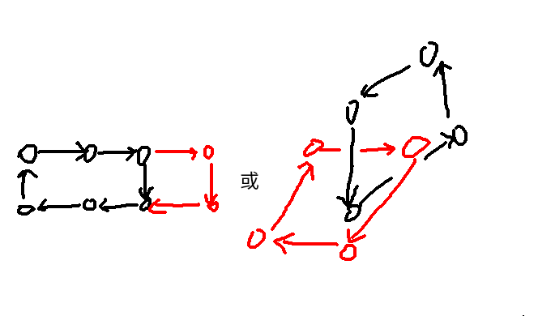

还算能做
A. Itinerary
https://www.luogu.com.cn/problem/P12195
画个图可以发现当前仅当同时满足：
- 给定的欧拉序子序列合法，即按照给定的顺序，任意一条边不被经过超过两次；为路径上的边按照经过时的方向打上标记。可以用暴力爬山之类的方法验证，这个过程是线性的。
- 选定的起点可以到达 \(s_1\)，且经过的边要么没有标记，要么标记方向和经过的方向相反。
所以可以从 \(s_1\) 做一遍 DFS，要求不能经过拥有相同方向标记的边即可。
#include <bits/stdc++.h>
int main() {
#ifdef ONLINE_JUDGE
std::ios::sync_with_stdio(false);
std::cin.tie(nullptr), std::cout.tie(nullptr);
#else
std::freopen(".in", "r", stdin);
std::freopen(".out", "w", stdout);
const auto stime = std::chrono::steady_clock::now();
#endif
int n, m;
std::cin >> n >> m;
struct edge { int v, id, ix; };
std::vector<std::array<int, 2> > tag(n);
std::vector<std::vector<edge> > g(n + 1);
for (int i = 1, x, y; i < n; ++i) {
std::cin >> x >> y;
g[x].push_back({ y, i, 0 });
g[y].push_back({ x, i, 1 });
}
std::vector<int> dep(n + 1);
std::vector<edge> fa(n + 1);
std::function<void(int, int)> DFS = [&](int x, int faa) {
for (auto [i, id, ix] : g[x])
if (i != faa) {
dep[i] = dep[x] + 1;
fa[i] = { x, id, !ix };
DFS(i, x);
}
return;
};
dep[1] = 1, DFS(1, -1);
std::vector<int> s(m + 1);
for (int i = 1; i <= m; ++i)
std::cin >> s[i];
for (int i = 2; i <= m; ++i) {
int x = s[i - 1], y = s[i];
if (dep[x] > dep[y])
for (; dep[x] > dep[y]; x = fa[x].v) {
if (tag[fa[x].id][fa[x].ix])
goto outo;
tag[fa[x].id][fa[x].ix] = 1;
}
else
for (; dep[y] > dep[x]; y = fa[y].v) {
if (tag[fa[y].id][!fa[y].ix])
goto outo;
tag[fa[y].id][!fa[y].ix] = 1;
}
for (; x != y; x = fa[x].v, y = fa[y].v) {
if (tag[fa[x].id][fa[x].ix] || tag[fa[y].id][!fa[y].ix])
goto outo;
tag[fa[x].id][fa[x].ix] = 1;
tag[fa[y].id][!fa[y].ix] = 1;
}
continue;
outo:
for (int j = 1; j <= n; ++j)
std::cout << 0 << '\n';
return 0;
}
std::vector<int> res(n + 1);
DFS = [&](int x, int fa) {
res[x] = 1;
for (auto [i, id, ix] : g[x])
if (i != fa && !tag[id][!ix])
DFS(i, x);
return;
};
DFS(s[1], -1);
for (int i = 1; i <= n; ++i)
std::cout << res[i] << '\n';
#ifndef ONLINE_JUDGE
std::cerr << std::fixed << std::setprecision(6) << std::chrono::duration<double> (std::chrono::steady_clock::now() - stime).count() << "s\n";
#endif
return 0;
}B. 2D Conveyer Belt S
https://www.luogu.com.cn/problem/P11454
注意到每个点的出度最多为 1。容易发现一个点是不可用的，当且仅当：
- 在至少一个环内部；
- 或者，会到达一个环上的点。
难点在于如何快速找到每次操作后环内部的点。但发现由于每个点出度为 1，不会出现：

之类让人摸不着头脑的情况。可以考虑找到外层合法的点，倒放 + floodfill 来保证复杂度；不知道有没有更简单的做法。具体 floodfill 的方式是，对于一个合法的格子，如果其上方有一个方向为
D的格子，那么上方也是合法的。这个转化是比较重要的。
#include <bits/stdc++.h>
const int dir[][3] = { { 0, -1, 1 }, { 0, 1, 2 }, { -1, 0, 3 }, { 1, 0, 4 } };
int main() {
#ifdef ONLINE_JUDGE
std::ios::sync_with_stdio(false);
std::cin.tie(nullptr), std::cout.tie(nullptr);
#else
std::freopen(".in", "r", stdin);
std::freopen(".out", "w", stdout);
const auto stime = std::chrono::steady_clock::now();
#endif
int n, q;
std::cin >> n >> q, n += 2;
std::vector<std::vector<int> > tag(n + 1, std::vector<int> (n + 1)), a(n + 1, std::vector<int> (n + 1));
std::vector<std::pair<int, int> > g(q + 1);
int tot = 0;
for (int i = 1, x, y; i <= q; ++i) {
char t;
std::cin >> x >> y >> t, ++x, ++y;
g[i] = { x, y };
if (t == 'L')
a[x][y] = 2;
else if (t == 'R')
a[x][y] = 1;
else if (t == 'U')
a[x][y] = 4;
else
a[x][y] = 3;
}
std::function<void(int, int)> DFS = [&](int x, int y) {
tag[x][y] = 1, ++tot;
for (auto [fx, fy, fi] : dir) {
int nx = x + fx, ny = y + fy;
if (nx >= 1 && nx <= n && ny >= 1 && ny <= n && !tag[nx][ny] && (!a[nx][ny] || a[nx][ny] == fi))
DFS(nx, ny);
}
return;
};
DFS(1, 1);
std::vector<int> res(q + 1);
res[q] = n * n - tot;
for (int i = q; i > 1; --i) {
auto [x, y] = g[i];
if (!tag[x][y] && (tag[x][y - 1] || tag[x][y + 1] || tag[x - 1][y] || tag[x + 1][y]))
DFS(x, y);
a[x][y] = 0;
res[i - 1] = n * n - tot;
}
for (int i = 1; i <= q; ++i)
std::cout << res[i] << '\n';
#ifndef ONLINE_JUDGE
std::cerr << std::fixed << std::setprecision(6) << std::chrono::duration<double> (std::chrono::steady_clock::now() - stime).count() << "s\n";
#endif
return 0;
}C. 机器人
https://www.luogu.com.cn/problem/P12018
- 考察题意，